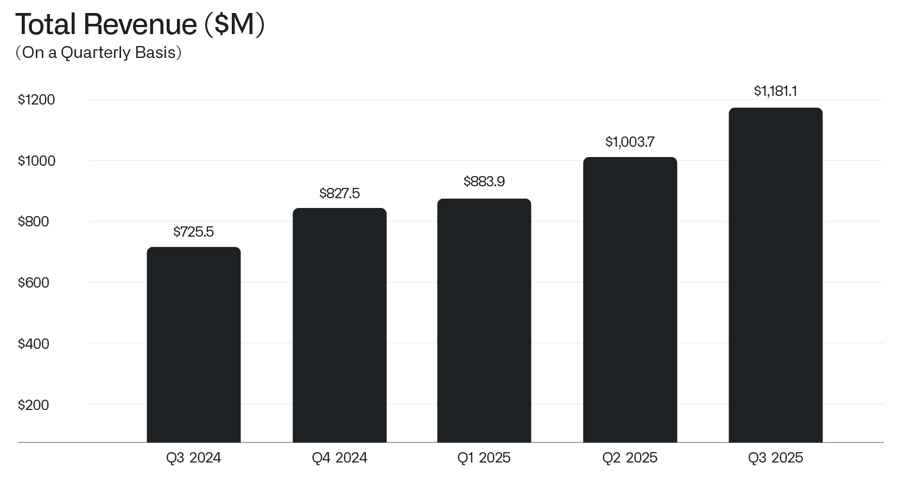
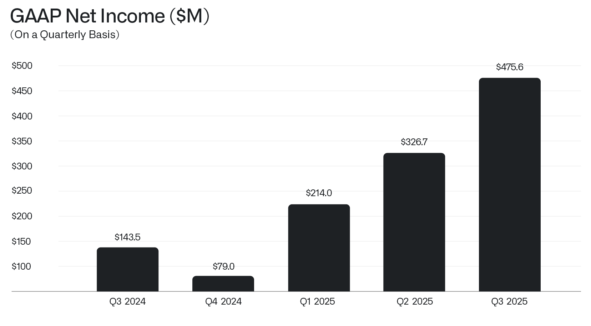
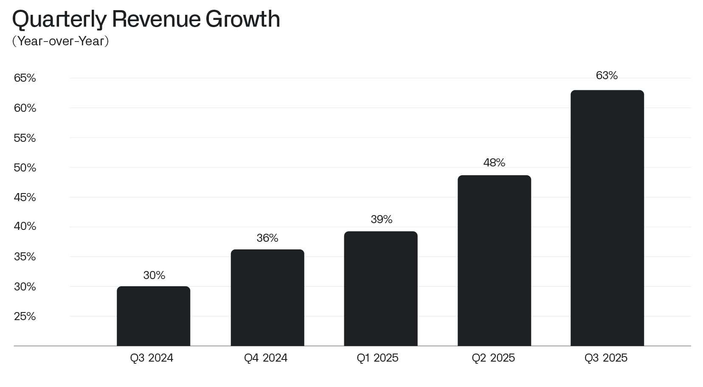
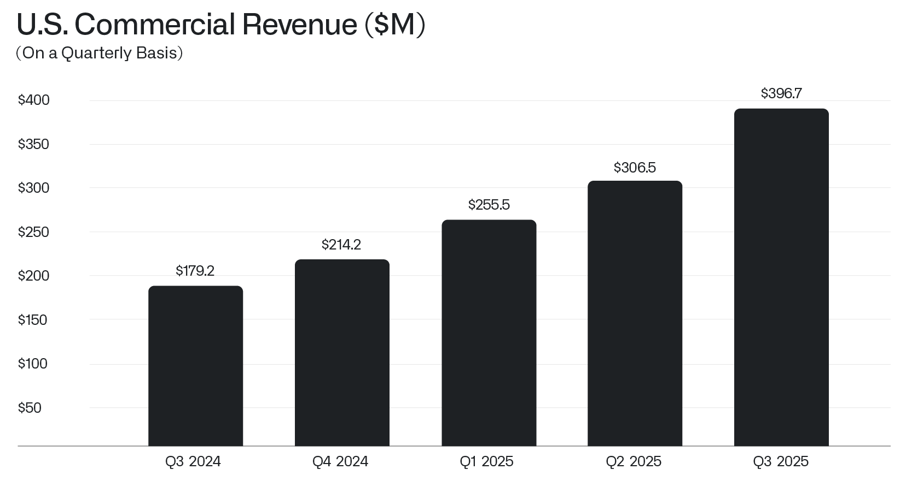
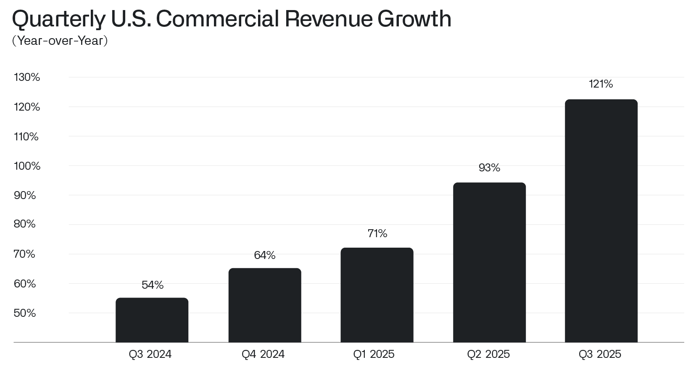

致股东的信
2025年11月3日
I.
我们仍处于万事的开端。
这仍然是开始，是第一章的第一个时刻。
本季度我们的业务创造了12亿美元的收入，创下我们二十多年历史上的新纪录，同比增长率高达63%，增长势头不断加速，令人惊叹。

过去一个季度我们还创造了高达4.76亿美元的利润，再次刷新公司历史纪录——需要说明的是，这是仅三个月内近五亿美元的利润。
值得铭记的是，如今这项业务单个季度产生的利润，已超过不久前其全年的收入。

这种崛起让大多数金融分析师和评论人士感到困惑，他们的思维框架完全没有预料到一家如此规模的公司能以如此迅猛且持续不断的速度增长。
我们的一些诋毁者陷入了一种癫狂而自毁式的迷惘之中。
外界确实一直难以评估我们的业务，无论是其在塑造当今地缘政治方面的意义，还是其在世俗金融意义上的价值。
事实是，Palantir让散户投资者得以获得以往只有Palo Alto最成功的风险资本家才能享有的回报率。而我们是通过真实且实质性的增长做到这一点的。

在美国，我们的商业业务在过去十二个月中增长了一倍以上，增速达121%，上季度创造了3.97亿美元的收入。
这部分业务绝对是一股不可阻挡的强大力量。
我们相信，单凭这部分业务本身，它将成为本世纪美国经济生活中最重要的商业故事之一。

尽管存在种种独特之处和复杂性，美国的企业文化仍然是地球上最具适应性的文化之一。
我们在美国的合作伙伴——他们是最早、最积极采用新型语言模型以及使其得以有效运行的本体论的采用者，而这些模型正在重塑人类生活——深知我们脚下的格局已经发生了何等重大的转变。
他们正在竞相试验和进化，抛开对“什么应该有效”的先入之见，转而关注“什么真正有效”。
这是一种无情的实用主义，并且正在产生非凡的成果。

归根结底，我们之所以能够走向某种普适的东西——一个可泛化的人工智能平台——正是得益于对具体事物近乎偏执的专注：我们形形色色的客户所面临的独特的、极具个性的挑战和技术难题。
二、
近年来我们的规模已显著扩大。
然而，与许多人的直觉相反（有时也包括我们自己），我们拒绝放弃约束，这正是我们持续崛起的主要驱动力。
我们的员工人数就是这种严谨方法的一个体现。随意扩充队伍会削弱我们更加依赖软件和本体论的力量并确保其持续成熟的必要性。另一种选择是依靠一大批聪明人去做那些掩盖平台弱点、并最终阻碍其发展的工作。
英国电影导演Henry Jaglom在一次采访中对 《华盛顿邮报》 于1994年引用他的朋友Orson Welles的话说：“艺术的敌人是限制的缺失。”
在软件开发中，这一点同样千真万确。
三、
一个世纪前，诗人William Butler Yeats曾警告：“猎鹰听不见放鹰人的呼唤；万物分崩离析；中心再难维系。”
今天，美国就是那个中心，而它必须挺住。
在这个国家和其他国家，拒绝任何共同的、明确界定的共同文化意识，已经付出了巨大的代价。
我们应该、也必须回归一种共同的国家体验——拥抱一种共同的认同，这种认同在定义上必然推崇某些理念、价值观、文化和生活方式，而排斥其他。
随意宣称所有文化和文化价值一律平等，无论过去还是现在都是一个错误。有些文化已被证明是精彩而富有创造力的，另一些则是破坏性的和极度倒退的。而更大的错误是认为我们能够或应该让全世界都改用我们的生活方式。
然而，作为一种文化，我们一直在抗拒——有些人积极而竭力地抗拒——对共同信念或共同文化的一定程度的认同，而这种认同本可使这样的取向成为可能。
然而，正是对某种更崇高事物的追求，以及对空洞、无力、虚浮的多元主义的拒绝，才有助于确保我们持续的力量与生存。
此致，

Alexander C. Karp
首席执行官兼联合创始人
Palantir Technologies Inc.
前瞻性声明
本函包含符合1995年《私人证券诉讼改革法》“安全港”条款定义的“前瞻性陈述”，包括但不限于有关我们的财务展望、产品开发及相关时间安排、分销和定价、我们软件平台的预期效益和应用、业务战略和计划（包括与我们的 Artificial Intelligence Platform（“AIP”）相关的战略和计划、销售和营销工作、销售团队、合作伙伴关系和客户）、对我们业务的投资、市场趋势和市场规模、机遇（包括增长机遇）、我们对现有和潜在投资以及与各实体商业合同的预期、我们对宏观经济事件的预期、我们对股票回购计划的预期以及定位的陈述。这些前瞻性陈述是在其首次发布之日作出的，基于当时的预期、估计、预测和推算，以及管理层的信念和假设。诸如“指导”、“预期”、“预计”、“应当”、“相信”、“希望”、“目标”、“规划”、“计划”、“目标”、“估计”、“潜在”、“预测”、“可能”、“将”、“或许”、“可以”、“打算”、“将”等词语，以及这些词语的变体或其否定形式和类似表述，旨在识别这些前瞻性陈述。前瞻性陈述受诸多风险和不确定性的影响，其中许多涉及超出我们控制范围的因素或情况。由于多种因素，我们的实际结果可能与前瞻性陈述中明示或暗示的结果存在重大差异，这些因素包括但不限于我们向美国证券交易委员会（“SEC”）提交的文件中详述的风险，包括我们截至2024年12月31日财年的10-K表格年度报告，以及我们可能不时向SEC提交的其他文件和报告，包括提供截至2025年9月30日财季收益新闻稿的8-K表格当前报告，以及截至2025年9月30日财季的10-Q表格季度报告。特别是，以下因素（除其他因素外）可能导致我们的结果与此类前瞻性陈述明示或暗示的结果存在重大差异：我们成功执行业务和增长战略的能力；我们的可用资金是否足以满足流动性需求；市场对我们平台、产品和服务总体上的需求；我们增加新客户数量和从客户获得收入的能力；我们能否将客户合同的全部或部分合同价值实现为收入，包括客户可选择的任何合同选项或受便利终止条款约束的合同期限；我们漫长且不可预测的销售周期；我们成功执行渠道销售和与第三方其他战略举措的能力；我们保留和扩大客户群的能力；我们的经营业绩和关键业务指标在未来期间按季度波动的可能性；我们业务的季节性；我们平台的实施过程可能复杂且耗时；我们成功开发和部署新技术以满足现有或潜在客户需求的能力；我们使平台和产品更易于安装、消费和使用的能力；我们维护和提升品牌及声誉的能力；随着业务增长以及追求业务和财务目标，我们维护和提升企业文化的能力；有关我们或我们领导层的新闻或社交媒体报道，包括但不限于呈现、强化或依赖不准确、误导性、不完整或具有其他损害性信息、误解或虚假信息的报道；近期或未来的全球宏观经济和地缘政治事件的影响，例如持续的俄乌冲突、以色列及更广泛的中东冲突、利率上升、货币政策变化、外币波动，或潜在或实际征收关税或对贸易关系的其他影响对我们公司或现有或潜在客户和合作伙伴的业务和运营造成的影响；在我们的平台中使用人工智能所引发的问题；以及我们或客户或第三方数据遭到的任何泄露或访问。
本信函中包含的前瞻性陈述仅代表我们在本信函发布之日的观点。我们预计后续事件和发展将导致我们的观点发生变化。我们不承担更新或修订任何前瞻性陈述的意图或义务，无论是基于新信息、未来事件还是其他原因。不应将本信函发布之日之后的任何日期的前瞻性陈述视为代表我们的观点。过往业绩并不必然预示未来结果。
其他说明
本信函可能包含某些非GAAP财务指标。我们对这些指标的定义可能与其他公司使用的定义不同，因此可比性可能有限。此外，其他公司可能不会发布这些或类似的指标。而且，这些指标存在一定的局限性，因为它们不包括我们合并经营报表中反映的某些费用的影响。因此，这些非GAAP财务指标应作为根据GAAP编制的指标的补充来考虑，而不能作为其替代品或孤立看待。我们通过提供这些非GAAP财务指标与最可比GAAP指标的调节表来弥补这些局限性，该调节表可在我们的投资者演示文稿和/或财报新闻稿中找到，这些材料可在我们的投资者关系网站（investors.palantir.com）上获取。我们鼓励投资者和其他人士完整地审阅我们的业务、经营业绩和财务信息，不要依赖任何单一财务指标，并将这些非GAAP财务指标与最直接可比的GAAP财务指标结合使用。
本信函可能包含基于独立行业出版物或其他公开信息以及基于我们内部来源的其他信息的统计数据、估算、预测和陈述。这些信息涉及许多假设和局限性，因此提醒您不要过分依赖这些估算。我们未独立验证这些行业出版物和其他公开信息中所含数据的准确性或完整性。因此，我们不对该数据的准确性或完整性作出任何陈述，也不承诺在本信函日期之后更新此类数据。本信函在讨论我们的业务时可能提及各种增长率。除非另有说明，这些增长率反映的是同比比较。
收到本信函即表示您确认，您将自行负责对市场及我们的市场地位进行评估，并将自行开展分析，且全权负责就所提供的信息（包括关于我们业务潜在未来表现的信息）形成自己的观点。